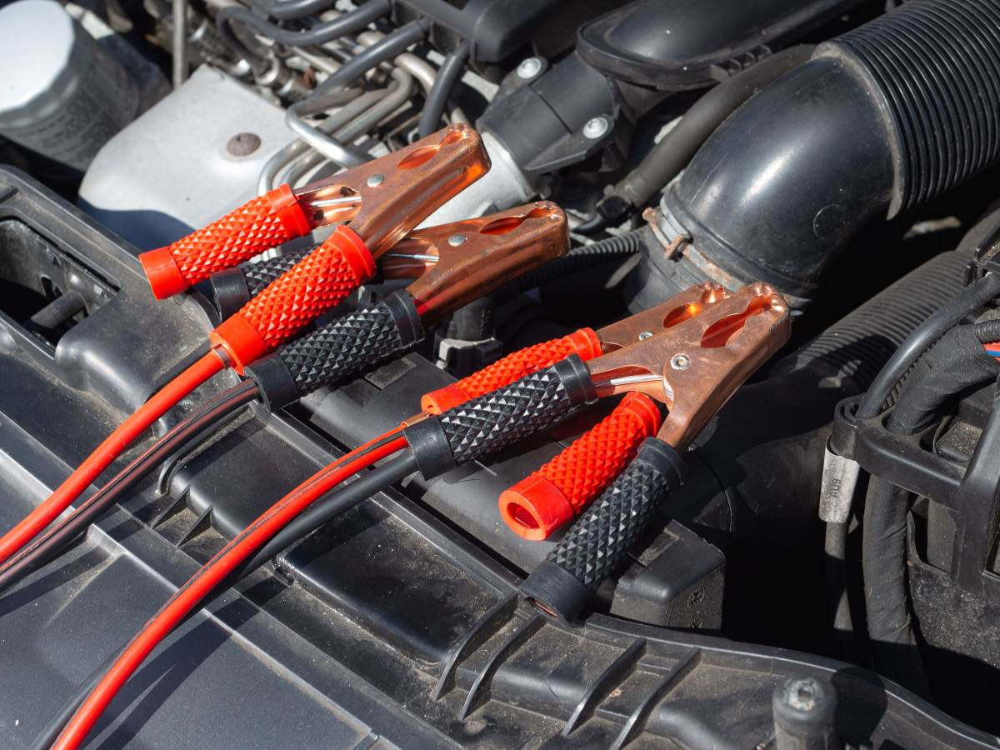
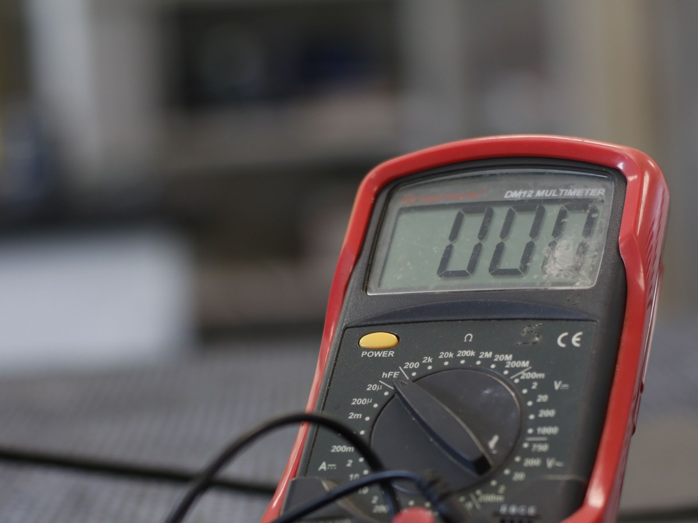
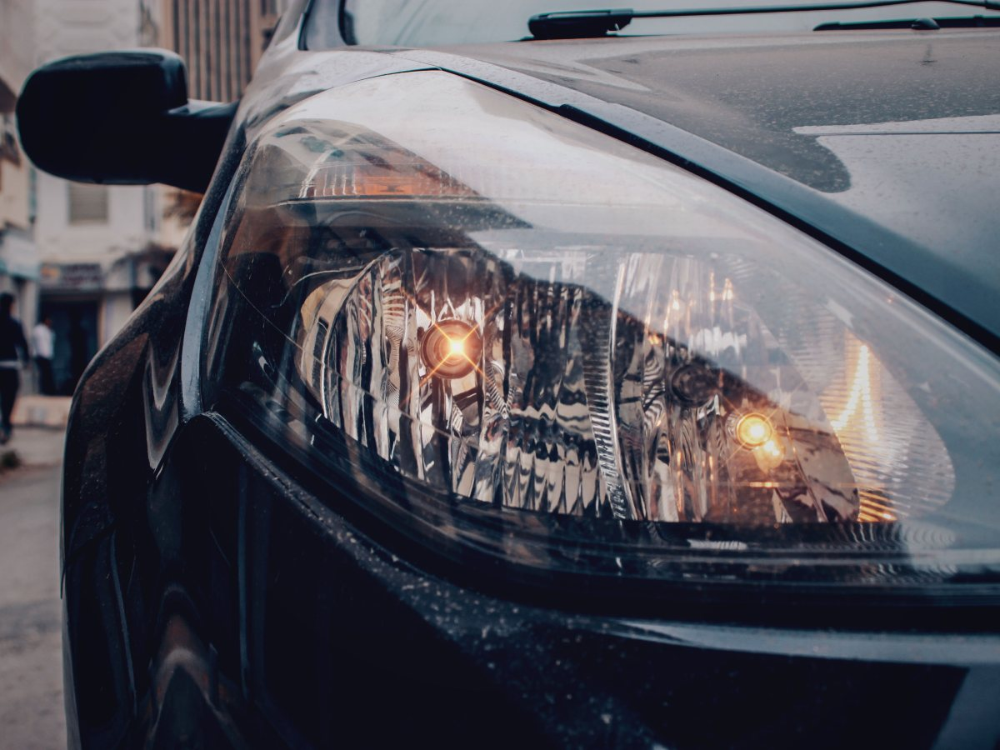
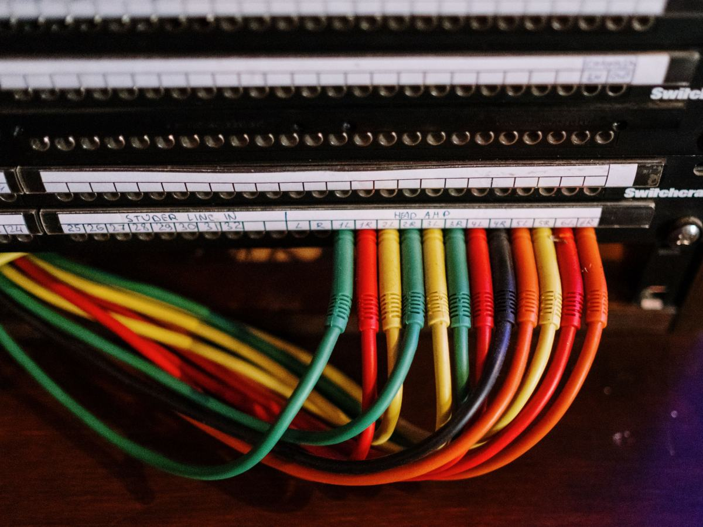
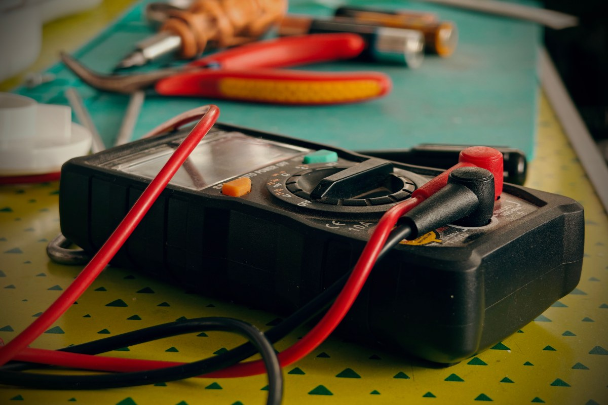
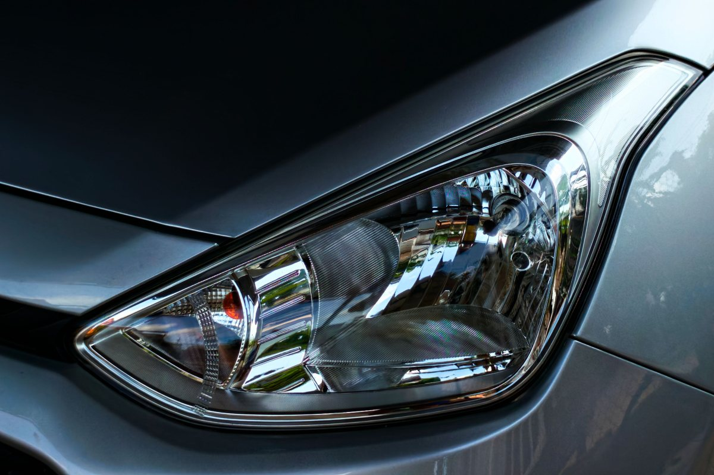
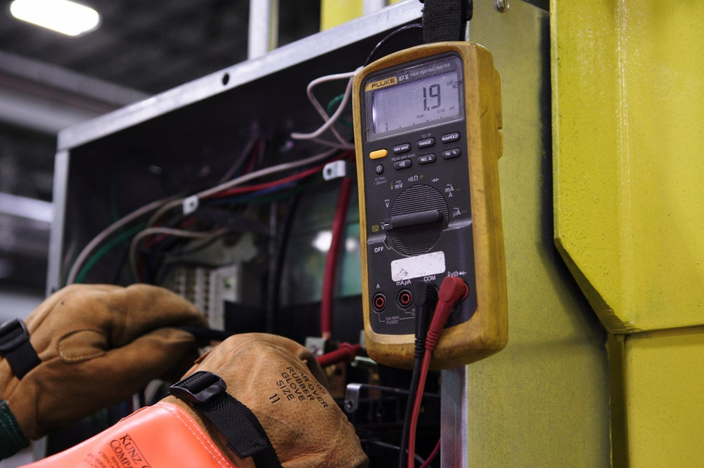
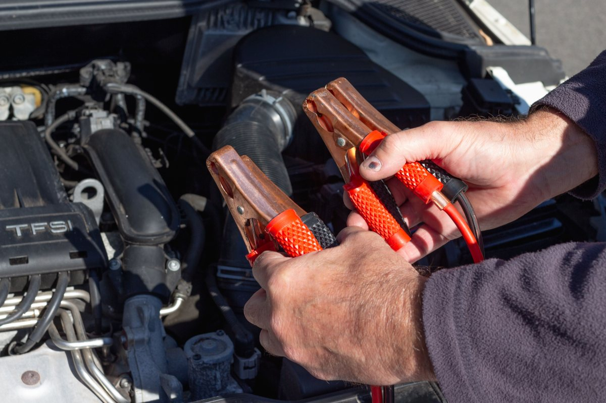
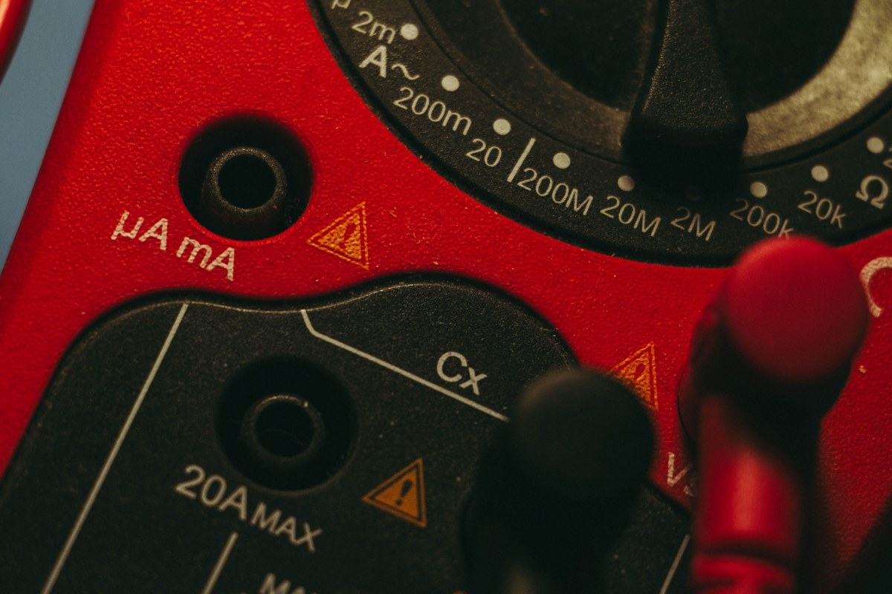

Electricidad automotriz · Temuco
No siempre es la batería.
En la mitad de los casos el problema era otro.
- 105reseñas en Google
- 4,6de nota
- 30segundos: la prueba de las luces
- 0páginas propias donde encontrarlo
La pregunta que decide a qué taller ir
¿Eléctrico o mecánico?
Si el motor gira y no prende, suele ser mecánico. Si ni siquiera gira, es eléctrico.
- Suele ser eléctrico
Un clic, y nada
Luces que bajan, batería que se descarga sola, fusibles que saltan.
- Suele ser mecánico
Gira y no prende
Ruidos al frenar, humo, pérdida de fuerza, manchas en el suelo.
- La prueba de 30 segundos
Luces y partida
Si las luces se apagan al dar partida, falta corriente. Si quedan igual, es el arranque.
Una guía gruesa, no un diagnóstico. La firma el taller.
Cambiar la batería no arregla una que se descarga sola.
Ordenado por lo que usted ve
Qué significa cada síntoma
-

Un solo clic
Bornes sulfatados: la falla más barata.
-

Se descarga sola
Algo consume con el auto apagado: se mide.
-

Luces que bajan
Alternador o su correa.
-

Olor a quemado
Apague: un cable recalentado.
Sólo midiendo se sabe cuál es.
Si el auto quedó botado, no lo remolque todavía.
Cuente primero qué pasó
En el taller
Se mide, no se adivina





Fotos de referencia: las del taller las pone el taller.
Dónde estamos
En Temuco
- Teléfono y WhatsApp
- 9 8950 1821
- Reseñas
- 105 en Google, nota 4,6
- Dirección
- Falta la dirección exacta
- Horario
- Falta el horario
Cuente el síntoma en una frase: a veces se resuelve donde quedó el auto.
Temuco: la dirección la confirma el taller Abrir en Google Maps
Para el dueño
Qué es real y qué falta
Lo verificado
El nombre, la ciudad, el teléfono y las 105 reseñas con 4,6.
Lo de ejemplo
La guía eléctrico o mecánico y las causas de cada síntoma: orientación general.
Lo que falta
La dirección, el horario y las fotos del taller.